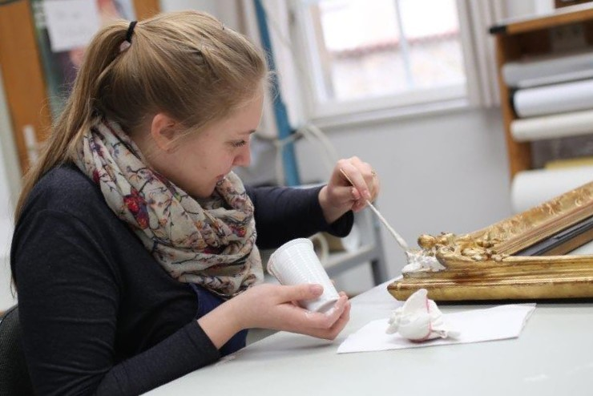

Kontakt
Ich freue mich über Ihr Interesse an meiner Arbeit.
Sie haben Fragen, Anregungen oder möchten eine Anfrage zu einem Restaurierungsprojekt stellen?
Gerne können Sie mich unverbindlich kontaktieren – ich melde mich zeitnah bei Ihnen zurück.
FREYA Restaurierung
Diplom-Restauratorin Freya Krotz
E-Mail: krotz@freya-restaurierung.de
Telefon: +49 176 477 5000 4
